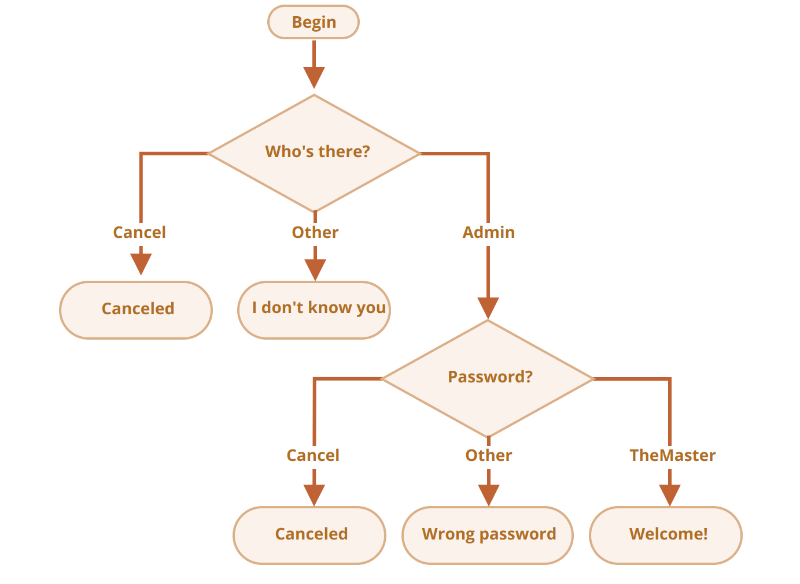

https://javascript.info/logical-operators
What's the result of OR?
- What is the code below going to output?
- alert( null || 2 || undefined );
What's the result of OR'ed alerts?
- What will the code below output?
- alert( alert(1) || 2 || alert(3) );
What is the result of AND?
- What is this code going to show?
What is the result of AND'ed alerts?
- What will this code show?
- alert( alert(1) && alert(2) );
The result of OR AND OR
- What will the result be?
- alert( null || 2 && 3 || 4 );
Check the range between
- Write an if condition to check that age is between 14 and 90 inclusively
- “Inclusively” means that age can reach the edges 14 or 90.
Check the range outside
- Write an if condition to check that age is NOT between 14 and 90 inclusively.
- Create two variants: the first one using NOT !, the second one – without it.
A question about "if"
- Which of these alerts are going to execute?
- What will the results of the expressions be inside if(...)?
- if (-1 || 0) alert( 'first' );
- if (-1 && 0) alert( 'second' );
- if (null || -1 && 1) alert( 'third' );
Check the login
- Write the code which asks for a login with prompt.
- If the visitor enters "Admin", then prompt for a password, if the input is an empty line or Esc – show “Canceled”, if it’s another string – then show “I don’t know you”.
- The password is checked as follows:
- If it equals “TheMaster”, then show “Welcome!”,
- Another string – show “Wrong password”,
- For an empty string or cancelled input, show “Canceled”
- Please use nested if blocks. Mind the overall readability of the code.
- Hint: passing an empty input to a prompt returns an empty string ''. Pressing ESC during a prompt returns null.
